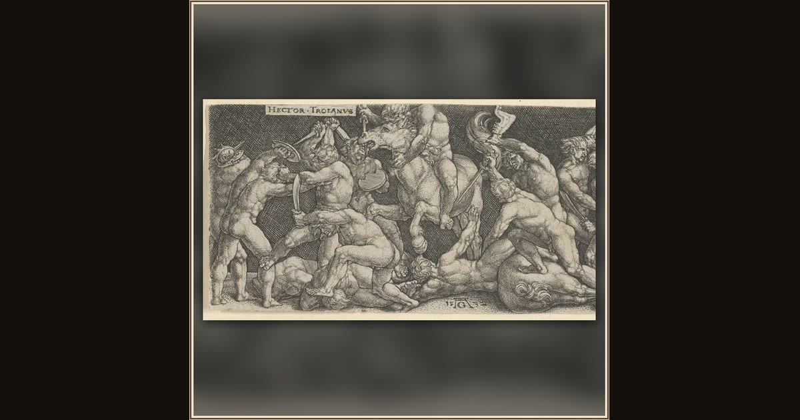

Hector Fighting the Greeks
Heinrich Aldegrever · 1532 · met
An engraving inscribed HECTOR TROIANUS shows a crowded fight against the Greeks; Aristotle cites Priam’s words on Hector’s valor as virtue on a heroic, almost divine scale (7.1). Explore its place in Aristotle's Nicomachean Ethics, Book VII, section 1.